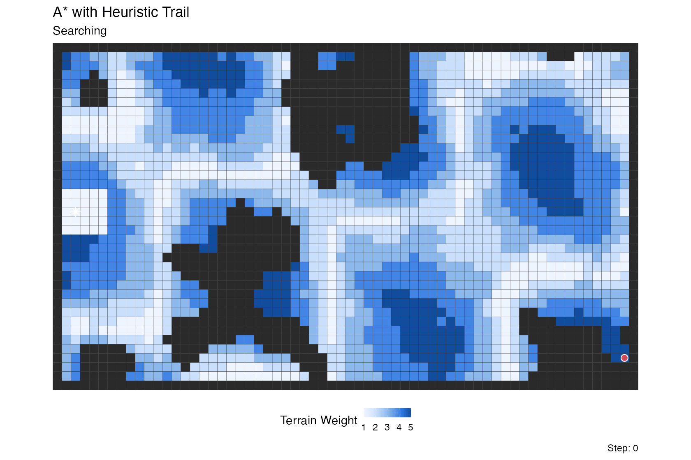

About these demos
The demos below illustrate the types of algorithms supported by
immutables, especially interval_index() as
applied to problems in computational geometry. They are not intended as
how-to guides; the underlying scripts are complex, largely AI generated,
and mostly composed of plotting and animation machinery.
Each section gives a picture of the algorithm, names the structures
it uses, and shows a pre-rendered animation of a run. The animations are
not produced during vignette build; they are GIFs under
vignettes/articles/assets/algorithm-demos/. Source paths
for every demo and the asset renderer are collected in a single section
at the end.
Maintainer note: re-render one demo asset
source("vignettes/articles/helpers/render_algorithm_demo_assets.R")
render_algorithm_demo_assets(demos = "sweep_line")Or from the shell:
Sweep line
Many algorithms in computational geometry utilize a sweep line. In this strategy points belonging to geometric objects (e.g. line segments) are ordered along one dimension, and then iterated over. Each point triggers some action, for example adding or removing the associated object from an “active” set and performing some computation on that active set.
In this very basic example, a sweep line loops over all line segments
in an interval_index(). It collects all segments into an
index, and loops over distinct endpoint values, using the
match_at parameter of pop_all_point() to
identify segments to move from the index to an active set (those that
start at the current sweep line position) and remove from the active set
(those end at the current sweepline position).
It also keeps a record by appending the active set to a
playback flexseq. Because these structures are immutable,
we needn’t worry about the active set changing as the algorithm
proceeds.
items <- c("a", "b", "c", "d")
starts <- c( 1, 2, 3, 4)
ends <- c( 3, 5, 5, 6)
# we could also use xs <- sort(unique(c(starts, ends)))
xs <- as_ordered_sequence(c(starts, ends), keys = c(starts, ends))
index <- as_interval_index(items, start = starts, end = ends)
active <- interval_index()
playback <- flexseq()
# loop(for(...) {...}) is needed to loop over an immutables structure
loop(for(x in xs) {
arrived <- pop_all_point(index, x, match_at = "start")
index <- arrived$remaining
active <- merge(active, arrived$elements)
retired <- pop_all_point(active, x, match_at = "end")
active <- retired$remaining
cat("At x =", x, "active:", paste(unlist(active), collapse = ", "), "\n")
playback <- push_back(playback, active)
})
#> At x = 1 active: a
#> At x = 2 active: a, b
#> At x = 3 active: b, c
#> At x = 3 active: b, c
#> At x = 4 active: b, c, d
#> At x = 5 active: d
#> At x = 5 active: d
#> At x = 6 active:Here’s an illustration with more ranges, higlighting the sweep line position and active set:

Segment sweep
In this variant we discover pairwise intersections among line segments in the 2-D plane.
The event stream (segment start/end events) is an
ordered_sequence keyed by x. Active segment candidates are
queried from an interval_index built on segment x-ranges. A
second ordered_sequence accumulates discovered
intersections as the sweep progresses. A flexseq holds the
snapshot timeline, so the animation can replay the sweep with the
intersection list growing step by step.

Convex hull
Computing convex hull also utilizes a sweep line method, or rather a pair of sweeps, at least for Andrew’s monotone chain method. After sorting the points by value, we sweep once to build the lower hull, and then sweep again for the upper hull. Each sweep uses a stack: push the next point, then pop while the last three points turn the wrong way.
Here flexseq carries most of the work. The sorted input
lives in an ordered_sequence, but the lower and upper hull
stacks are themselves flexseqs, and every push and pop
returns a new one rather than mutating in place. A third
flexseq stores the snapshot timeline, so after the run we
have a complete record of every intermediate hull for visualization,
including which point was pushed, which points were popped because they
violated convexity, and what the partial hull looked like at every
step.

Fortune frontier
Fortune’s algorithm](https://en.wikipedia.org/wiki/Fortune%27s_algorithm) is a sweep-line method for efficiently computing Voronoi diagrams. A vertical sweep moves across the set of points; each new site introduces a parabola to the “beach line” frontier, and the breakpoints between adjacent parabolas trace out the Voronoi edges as the sweep advances.
Three structures share the work. A priority_queue holds
events keyed by x and pop_min() produces the next event
due. Two event types flow through it: site events (one per
input point, known up front) and circle events (emerging
dynamically whenever three adjacent arcs on the beach line begin
converging on a circumcenter; processing one creates a Voronoi vertex
and retires the middle arc). The active arcs along the frontier live in
an ordered_sequence, keyed by a composite score so they
stay in frontier order. A flexseq accumulates the
breakpoint trail–every Voronoi edge segment traced out so
far–and a second flexseq holds the snapshot timeline. The
trail is an especially good fit for persistence: it only ever grows, and
the accumulated value from any past step is still available for
comparison or partial rendering with no bookkeeping. This animation
samples intermediate sweep positions for smoothness; structurally, the
sweep only needs to stop at site and circle events.

A* search
A*
search finds a shortest path from a start cell to a goal cell on a
weighted graph by always expanding the frontier node with the smallest
estimated total cost. Each node n carries two numbers:
g(n), the known cost to reach it from the start, and
h(n), a heuristic estimate of the remaining cost to the
goal. The algorithm repeatedly pops the node with the smallest
f = g + h from a frontier, marks it visited, and updates
its neighbors with any newly-cheaper path estimates. With an admissible
heuristic this is guaranteed to find an optimal path while typically
exploring far fewer nodes than Dijkstra’s algorithm.
This demo runs A* on a generated maze from a fixed start to a goal.
Three structures share the work. A priority_queue keyed by
f-score holds the frontier, and pop_min() picks the next
node to expand. A separate ordered_sequence records which
nodes have already been expanded with fast additions and membership
checks (keyed on index). A flexseq accumulates a snapshot
of the frontier, the set of expanded nodes, and the current node at
every step. Since the full search history is preserved as an immutable
timeline, after the run we can fold the snapshots into a cell
activity field that weights each cell by how long it spent as
frontier, current, and expanded — the orange trail you see during
playback, made explicit as a persistent overlay. The animation reveals
the final path on top of this activity map once the search settles.

A* with heuristic trail
This is a variation on the A* search above, run over a weighted terrain grid rather than a maze and augmented with a lagged retirement “clear wave” that fades expanded cells out of the visualization.
Five roles share the work. The A* frontier is still a
priority_queue keyed by f = g + h, and the
expanded set is still an ordered_sequence keyed by cell
index. Running alongside them is a second priority_queue
holding scheduled retirement events, and a second
ordered_sequence tracking the currently-visible trail. A
flexseq accumulates snapshots of all of these at every
expansion step.
What makes the trail interesting is how the retirement lag is
computed: cells far from the goal (high h) linger in the
trail longer, while cells close to the goal clear quickly. The tail is
therefore thick in high-heuristic regions the search recently moved
through, and thin near the goal where the search is narrowing in.

Source and rendering
The full implementations live under vignettes/articles/helpers/demos/:
demo_sweep_line_immutables.Rdemo_segment_sweep_immutables.Rdemo_convex_hull_immutables.Rdemo_fortune_frontier_immutables.Rdemo_astar_immutables.Rdemo_astar_trail_immutables.R
The vignette-side helpers (asset paths, render presets, the A* preset
used by the large-maze animation) are in vignettes/articles/helpers/algorithm_demos_helpers.R,
and vignettes/articles/helpers/render_algorithm_demo_assets.R
is the entry point for re-rendering any or all of the GIFs.